Sainte Anne Marine Park
Snorkel the reefs around Sainte Anne, Moyenne, Round and Cerf islands. The full day adds time ashore and lunch cooked on board.
Snorkel Sainte Anne or Baie Ternay, go fishing, or spend the day on Praslin and La Digue. Half or full day, planned around your group.
Every excursion is private and planned around your group, so tell us where you'd like to go. Half days stay around Mahé; full days on Birdy Birdy can go further. If you'd rather not plan it, these are the routes we run most often. All leave from Marine Charter, Mahé.
Snorkel the reefs around Sainte Anne, Moyenne, Round and Cerf islands. The full day adds time ashore and lunch cooked on board.
A sheltered bay on Mahé's north-west tip, protected as a marine park. Calm water and good snorkelling close to the reef.
Go north or south along the coast and stop at the beaches and reefs that suit the day. The full day includes lunch cooked on board.
Cruise past Anse Lazio with a snorkel stop, then spend the afternoon on La Digue at Anse Source d'Argent. Or go ashore on Praslin to see Vallée de Mai.
Coastal cruise (recommended)
Praslin on land
Snacks and drinks on board. Not included: entrance fees, taxis, bike or buggy hire and lunch. Times and stops depend on the weather and sea.
Head out on Birdy Birdy, which is rigged for fishing. The full day includes lunch cooked on board.
A shorter cruise off Mahé to watch the sun go down from the water.
Both are booked privately with a skipper. Birdy Birdy is the bigger boat, with a kitchen on board: it does the full days, fishing and Praslin & La Digue. Trident is smaller and quicker, with a covered cabin, and runs half days around Mahé.
 Fishing & island hopping
Fishing & island hopping
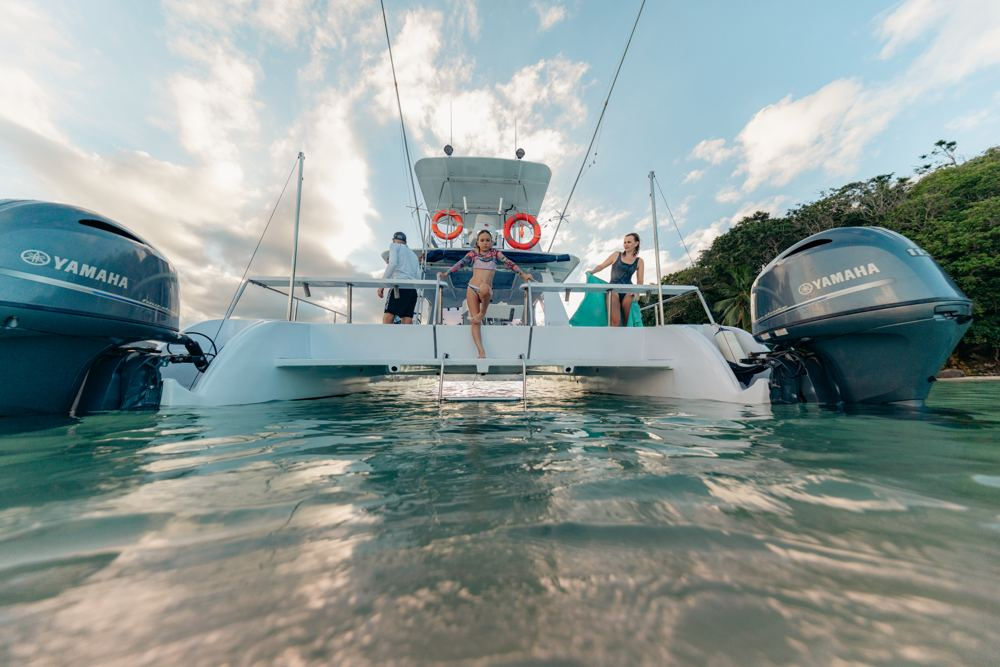
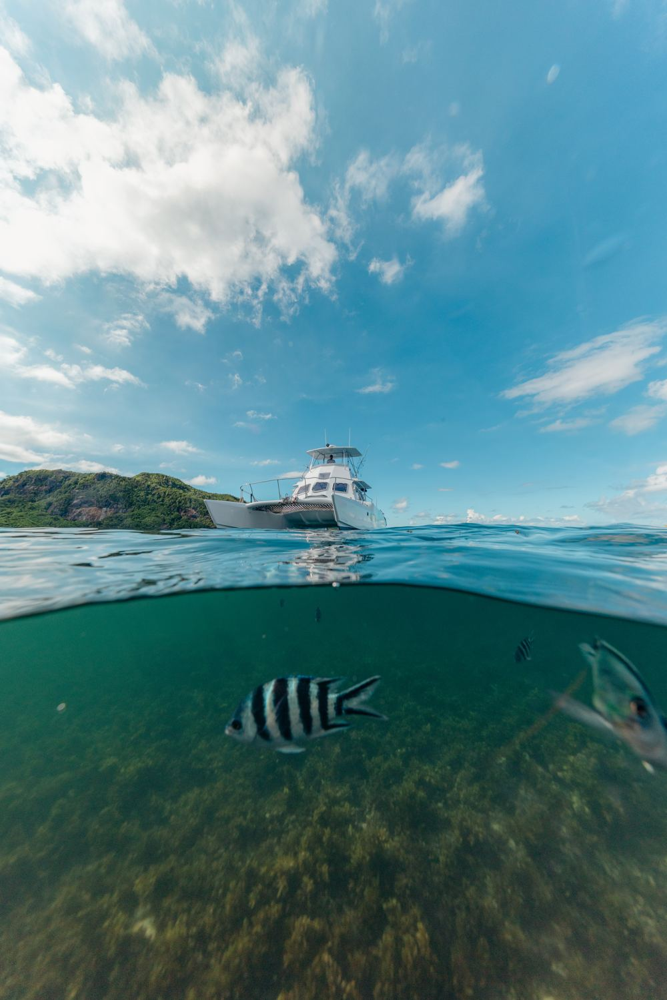
Power catamaran for up to 14 guests, with a shaded flybridge and a net foredeck to lie out on. It's set up for fishing and it's the boat for excursions to Praslin and La Digue.
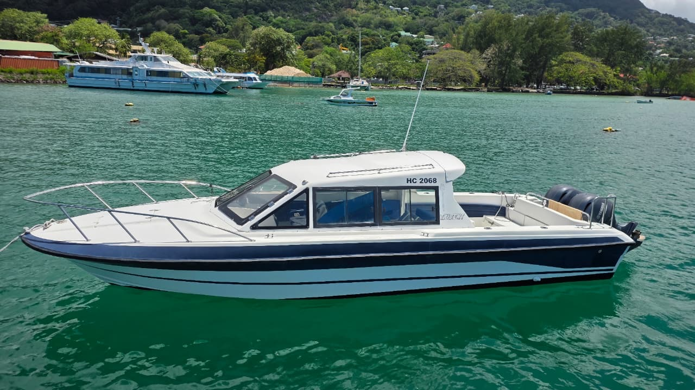
Covered cabin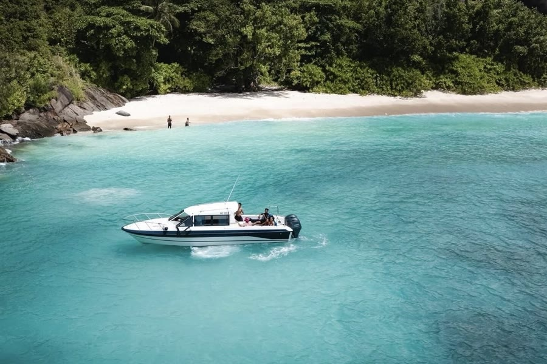
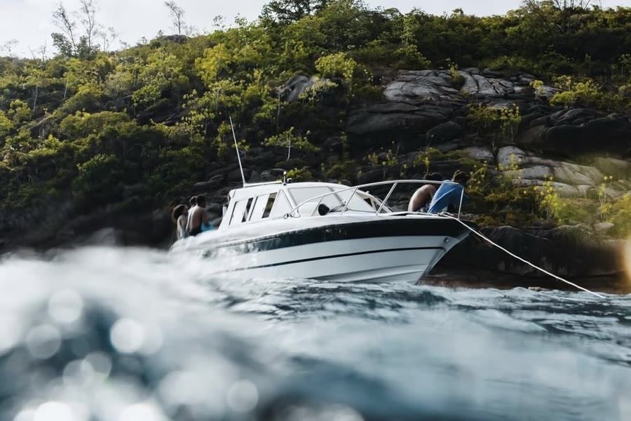
8.8 m Bestboat hardtop with twin 115 HP Yamahas, for up to 14 guests. The cabin keeps you out of the sun and spray, and it's quick between snorkel stops around Mahé. Drinks and snacks on board; no cooking.
Per boat, not per person. In euros with taxes included, valid to 31 October 2026.
| Half day · 4 hrs | 1–8 guests | 9–14 guests | |
|---|---|---|---|
| Sainte Anne Marine ParkNo lunch | €585 | €760 | |
| Mahé Coastal DiscoveryNo lunch | €750 | €895 | |
| Full day · 8 hrs | 1–8 guests | 9–14 guests | |
| Sainte Anne Marine ParkLunch included | €930 | €1,275 | |
| Mahé Island DiscoveryLunch included | €1,120 | €1,480 | |
| Fishing | 1–5 guests | 6–10 guests | |
| Half day fishing | €780 | €950 | |
| Full day fishingLunch included | €1,250 | €1,500 | |
| Island hopping | 1–5 | 6–10 | 11–14 |
| Praslin & La DigueNo lunch | €1,300 | €1,500 | €1,650 |
Soft drinks, water, snorkelling and safety gear, captain and crew included.
| Half day · 4 hrs | 1–8 guests | 9–14 guests |
|---|---|---|
| Sainte Anne Marine ParkNo lunch | €585 | €760 |
| MahéNo lunch | €720 | €895 |
Water, soft drinks, beers, snacks and snorkelling gear included. Half days only.
Photos from Birdy Birdy excursions.
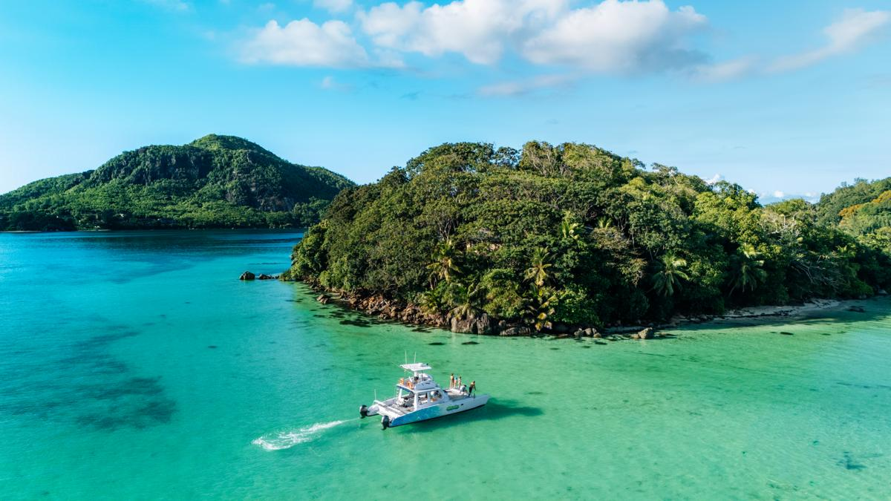
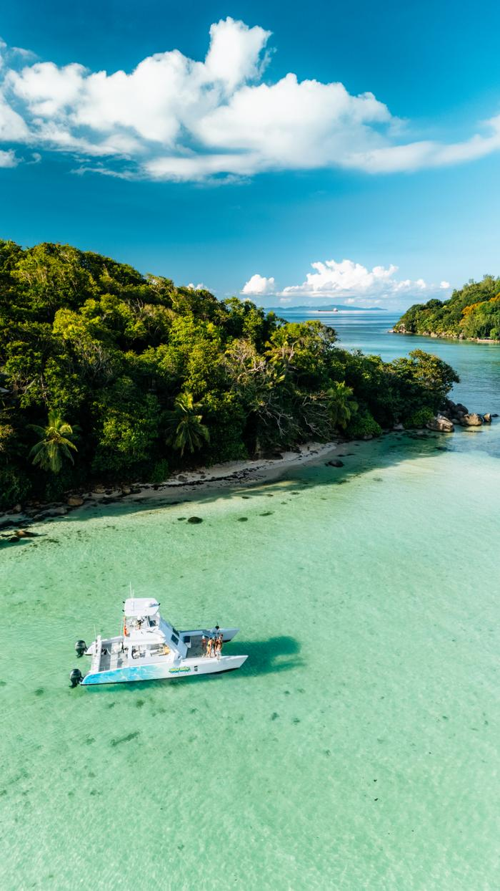
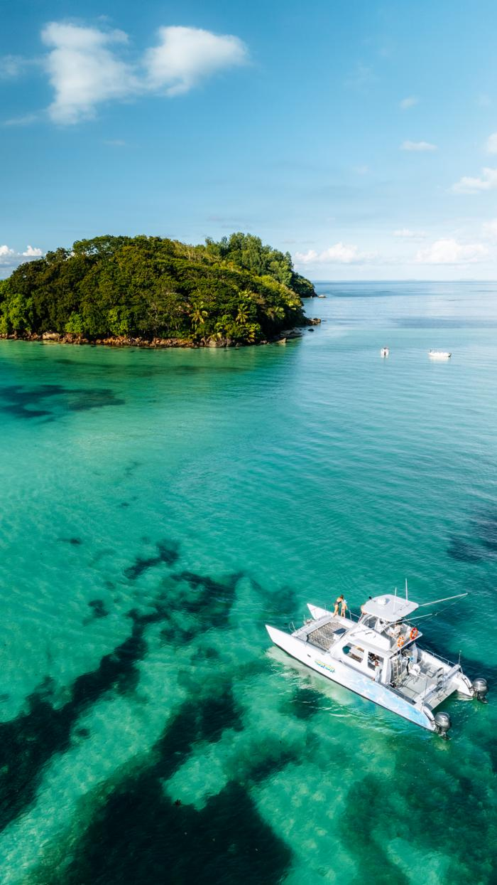
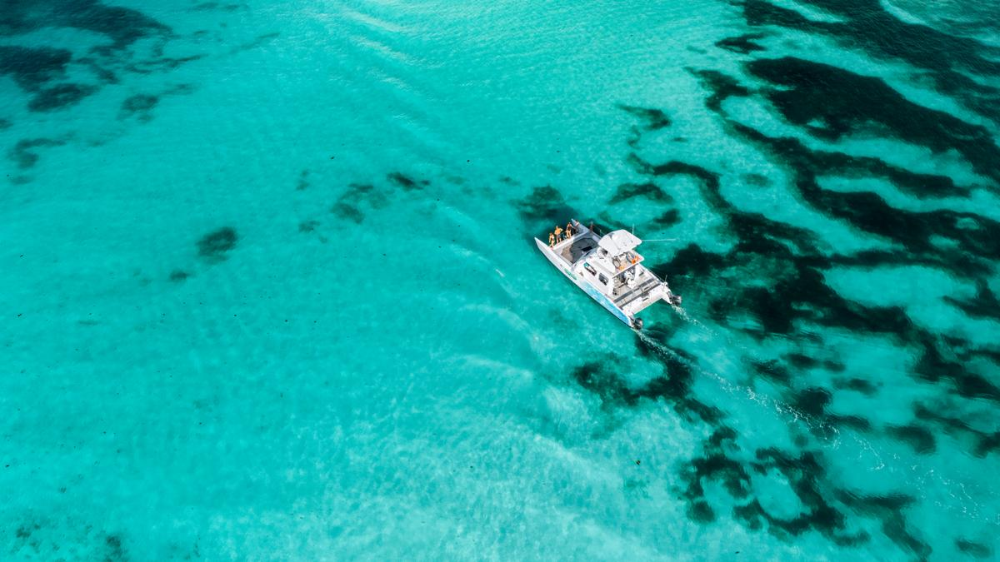
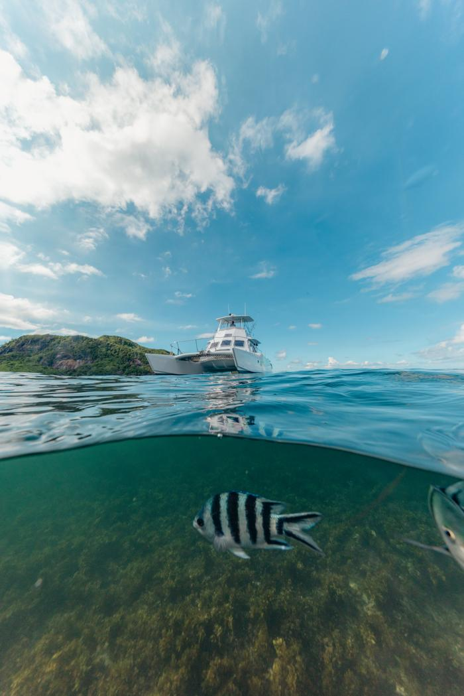
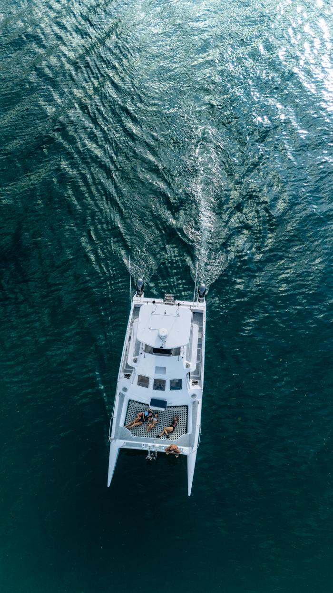
Message us on WhatsApp. We usually reply the same day.
[PHONE NUMBER]
[OWNER EMAIL]
Marine Charter, Mahé